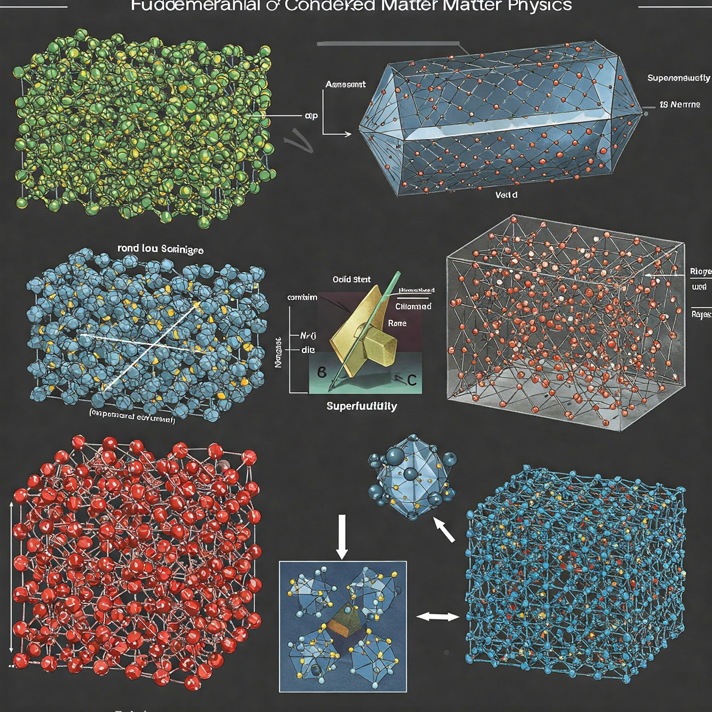

Os Estados Fundamentais da Matéria
Os estados físicos da matéria representam as diferentes formas macroscópicas que a matéria pode assumir,
determinadas fundamentalmente pela organização espacial e pela energia cinética de suas partículas constituintes
(átomos ou moléculas), bem como pelas forças intermoleculares que atuam entre elas, sob dadas condições de
temperatura e pressão. Tradicionalmente, distinguem-se quatro estados fundamentais: sólido,
líquido, gasoso e plasma.
Sólido

No estado sólido, as partículas constituintes estão fortemente ligadas umas às outras por intensas forças
intermoleculares, ocupando posições relativamente fixas no espaço. Essa organização resulta em uma estrutura
rígida, que pode ser altamente ordenada e repetitiva, como nos sólidos cristalinos, ou mais desordenada, como
nos sólidos amorfos. A energia cinética das partículas é baixa, limitando seu movimento a vibrações em torno de
suas posições de equilíbrio. Macroscopicamente, os sólidos caracterizam-se por possuírem forma e volume bem
definidos, independentemente do recipiente que os contém. Devido ao pouco espaço entre as partículas e às fortes
interações, são geralmente incompressíveis e apresentam alta rigidez.10 Exemplos comuns incluem metais como o
ouro, o gelo (água no estado sólido), a madeira e diversos minerais e cristais, que encontram vasta aplicação em
materiais estruturais, ferramentas e joalheria.
Líquido

O estado líquido representa um estado intermediário de agregação entre sólidos e gases. As partículas nos
líquidos estão próximas umas das outras, mas as forças intermoleculares são mais fracas do que nos sólidos,
permitindo que as partículas se movam e deslizem umas sobre as outras. Consequentemente, os líquidos não possuem
forma própria, adaptando-se ao formato do recipiente que os contém. No entanto, mantêm um volume definido e são
relativamente difíceis de comprimir. A energia cinética das partículas é maior que nos sólidos, conferindo-lhes
fluidez. Exemplos onipresentes são a água em condições ambientes , o álcool etílico e metais líquidos como o
mercúrio. Suas aplicações incluem solventes, sistemas hidráulicos, lubrificantes e meios de transporte de calor.
Gasoso

No estado gasoso, as partículas estão muito distantes umas das outras e as forças intermoleculares são
praticamente desprezíveis.Possuem alta energia cinética, movendo-se de forma rápida, desordenada e caótica,
colidindo entre si e com as paredes do recipiente. Como resultado, os gases não possuem forma nem volume
definidos, expandindo-se para ocupar todo o volume disponível do recipiente que os contém. Devido ao grande
espaçamento entre as partículas, os gases são altamente compressíveis e possuem baixa densidade. Exemplos
incluem o ar que respiramos, o gás hélio usado em balões, o vapor d'água e gases combustíveis como o butano em
botijões. Gases são essenciais como combustíveis, em processos industriais diversos e para inflar objetos.
Plasma

Frequentemente chamado de "quarto estado da matéria", o plasma é fundamentalmente um gás ionizado. Ele se forma
quando um gás é submetido a condições de energia extremamente alta, como temperaturas elevadíssimas (milhares ou
milhões de graus Celsius) ou campos elétricos muito intensos. Essa energia é suficiente para arrancar elétrons
dos átomos ou moléculas do gás, resultando em uma mistura eletricamente neutra no geral, mas composta por
partículas carregadas: íons positivos (núcleos atômicos e/ou moléculas que perderam elétrons) e elétrons livres.
As partículas no plasma possuem energia cinética extremamente alta. Embora íons e elétrons se atraiam
eletricamente, sua alta velocidade impede que se recombinam permanentemente. Uma característica distintiva
crucial é sua excelente condutividade elétrica, muitas vezes considerada quase infinita, devido à mobilidade dos
elétrons livres. Além disso, o plasma interage fortemente com campos elétricos e magnéticos, o que permite seu
confinamento e manipulação, e leva à emissão de luz. A densidade do plasma pode variar enormemente, desde
plasmas de baixa densidade em lâmpadas fluorescentes até plasmas extremamente densos no núcleo de estrelas.
Exemplos naturais abundam: o Sol e as estrelas são imensas esferas de plasma; raios durante tempestades são
canais de plasma formados pela ionização do ar; as auroras polares resultam da interação do plasma do vento
solar com a magnetosfera terrestre. De fato, acredita-se que a maior parte da matéria bariônica (comum) do
universo exista no estado de plasma. Exemplos artificiais incluem lâmpadas fluorescentes e de neon, telas de TV
de plasma (tecnologia mais antiga), o "globo de plasma" decorativo, e os plasmas confinados magneticamente em
experimentos de fusão nuclear como os Tokamaks.
Comparativo dos Estados Fundamentais da Matéria
| Característica |
Sólido |
Líquido |
Gasoso |
Plasma |
| Organização |
Partículas ordenadas, posições fixas |
Partículas próximas, móveis |
Partículas distantes, caóticas |
Íons e elétrons livres, alta agitação |
| Energia Cinética |
Baixa (vibração) |
Média |
Alta |
Muito Alta |
| Forças Intermoleculares |
Fortes |
Moderadas |
Quase nulas |
Dominadas por interações eletromagnéticas |
| Forma |
Definida |
Variável (recipiente) |
Variável (recipiente) |
Variável (recipiente) |
| Volume |
Definido |
Definido |
Variável (recipiente) |
Variável (recipiente) |
| Compressibilidade |
Muito Baixa |
Baixa |
Alta |
Alta |
| Condutividade Elétrica |
Geralmente baixa (exceto metais) |
Baixa |
Muito Baixa |
Muito Alta |
| Exemplos |
Gelo, Rocha, Metal |
Água, Óleo, Mercúrio |
Ar, Hélio, Vapor |
Sol, Raios, Lâmpadas |
A Fronteira dos Novos Materiais: Propriedades Sob Medida
O entendimento aprofundado dos estados da matéria e das interações fundamentais que os governam, proporcionado
pela Física da Matéria Condensada, não se limita a descrever o mundo como ele é. Ele abre a porta para a
manipulação ativa da matéria em suas escalas mais básicas – atômica e molecular – permitindo a criação de
materiais inteiramente novos, com propriedades cuidadosamente projetadas para aplicações específicas. Essa
capacidade de engenharia de materiais vai muito além das limitações dos materiais tradicionais encontrados na
natureza, impulsionando uma verdadeira revolução tecnológica.
Nanomateriais: O Mundo em Escala Atômica

Os nanomateriais representam uma classe de materiais definidos não por sua composição química, mas por seu
tamanho. São estruturas que possuem pelo menos uma de suas dimensões na faixa de 1 a 100 nanômetros (nm). Um
nanômetro equivale a um bilionésimo de metro (10⁻⁹ m), uma escala difícil de visualizar – encontrar uma
nanopartícula em uma bola de futebol seria comparável a localizar a própria bola de futebol na superfície da
Terra. Essa definição abrange uma vasta gama de estruturas, incluindo nanopartículas (que são nanométricas em
todas as três dimensões, como pontos quânticos ou nanopartículas metálicas e de óxidos), nanotubos e nanofibras
(nanométricos em duas dimensões, mas alongados na terceira), e filmes finos ou camadas superficiais
(nanométricos em apenas uma dimensão).
O que torna os nanomateriais tão fascinantes e tecnologicamente promissores são suas propriedades
fundamentalmente diferentes daquelas observadas nos mesmos materiais em escala macroscópica (bulk). Essas
mudanças drásticas nas propriedades elétricas, ópticas, mecânicas, térmicas e, especialmente, químicas, surgem
de dois fenômenos principais que se tornam dominantes na nanoescala:
Efeito da Área Superficial
- À medida que o tamanho de uma partícula diminui para a nanoescala, a razão entre sua área superficial e seu
volume aumenta exponencialmente.
- Uma proporção muito maior de átomos passa a residir na superfície do material, em vez do interior.
- Átomos na superfície possuem menos vizinhos e ligações insatisfeitas, o que altera seu comportamento em
relação aos do interior.
- A alta área superficial:
- Aumenta significativamente a reatividade química.
- Pode alterar propriedades físicas como o ponto de fusão (ex: nanopartículas de ouro derretem a
temperaturas muito menores que o ouro em barra).
Efeitos Quânticos
- Na nanoescala, as dimensões se aproximam do comprimento de onda de de Broglie dos elétrons.
- A física clássica deixa de ser adequada; a mecânica quântica se torna dominante.
- Elétrons confinados:
- Exibem comportamento ondulatório.
- Apresentam níveis de energia quantizados (discretos), ao contrário dos materiais convencionais (bulk).
- Consequências:
- Ajuste do band gap (intervalo de energia proibida), como em nanofios de silício que têm band gap maior
que o silício comum.
- Alterações nas propriedades elétricas e ópticas (ex: mudança de cor do material).
Supercondutores: Eletricidade Sem Perdas

A supercondutividade é um dos fenômenos mais extraordinários e contra-intuitivos da física da matéria
condensada. Descoberta em 1911 pelo físico holandês Heike Kamerlingh Onnes ao estudar as propriedades elétricas
do mercúrio a temperaturas extremamente baixas (próximas do zero absoluto), ela se manifesta como a capacidade
de certos materiais conduzirem corrente elétrica sem apresentar absolutamente nenhuma resistência. Isso ocorre
quando o material é resfriado abaixo de uma temperatura específica, conhecida como temperatura crítica (Tc), que
varia para cada material supercondutor.
Resistência Elétrica Zero
- Abaixo da temperatura crítica (Tc), a resistência elétrica do material cai abruptamente para zero.
- Isso permite que uma corrente elétrica:
- Flua indefinidamente em um circuito supercondutor (como um anel).
- Não precise de fonte de energia contínua.
- Não dissipe energia na forma de calor.
- Experimentos mostraram que essas correntes podem persistir por anos.
- Estimativas teóricas indicam tempos de decaimento de milhares de anos.
- Essa propriedade tem aplicações revolucionárias na transmissão de energia elétrica.
Efeito Meissner
- Descoberto por Walther Meissner e Robert Ochsenfeld em 1933.
- Quando o material é resfriado abaixo de Tc na presença de um campo magnético:
- As linhas de campo magnético são expulsas de seu interior.
- O material se comporta como um diamagneto perfeito (no caso dos supercondutores Tipo I).
- Correntes elétricas superficiais são induzidas no material:
- Geram um campo magnético oposto.
- Cancelam o campo magnético externo no interior do supercondutor.
- Esse fenômeno é a base da levitação magnética:
- Um ímã pode flutuar de forma estável sobre um supercondutor resfriado.
Tipo I:
Geralmente são metais puros como chumbo, mercúrio e alumínio. Eles exibem um efeito Meissner completo (expulsão
total do campo) até um certo campo magnético crítico, Hc. Acima de Hc, a supercondutividade é abruptamente
destruída e o material retorna ao estado normal (resistivo). Os valores de Hc para supercondutores Tipo I são
tipicamente baixos, o que limita suas aplicações práticas em dispositivos que exigem altos campos magnéticos.
Tipo II:
Incluem a maioria das ligas metálicas (como Nióbio-Titânio, NbTi, e Nióbio-Estanho, Nb₃Sn) e as cerâmicas
supercondutoras de alta temperatura (como YBCO - óxido de ítrio, bário e cobre, BSCCO e Diboreto de Magnésio,
MgB₂). Estes materiais possuem dois campos críticos: Hc₁ e Hc₂. Abaixo de Hc₁, eles exibem efeito Meissner
completo, como os Tipo I. Entre Hc₁ e Hc₂, o campo magnético penetra parcialmente no material na forma de
filamentos quantizados de fluxo magnético, chamados vórtices, enquanto o restante do material permanece
supercondutor (resistência zero). Somente acima do campo crítico superior, Hc₂, que pode ser extremamente alto
(dezenas ou centenas de Tesla), a supercondutividade é completamente destruída. Essa capacidade de manter a
supercondutividade em campos magnéticos muito intensos é o que torna os supercondutores Tipo II essenciais para
a maioria das aplicações tecnológicas de grande escala.
| Característica |
Supercondutor Tipo I |
Supercondutor Tipo II |
| Materiais Típicos |
Metais puros (Pb, Hg, Al) |
Ligas (NbTi, Nb₃Sn), Cerâmicas (YBCO, BSCCO, MgB₂) |
| Comportamento em Campo B |
Transição abrupta para estado normal |
Estado misto (vórtices) entre Hc₁ e Hc₂ |
| Efeito Meissner |
Completo abaixo de Hc |
Completo abaixo de Hc₁, parcial entre Hc₁ e Hc₂ |
| Campos Críticos |
Um campo crítico (Hc), geralmente baixo |
Dois campos críticos (Hc₁ < Hc₂), Hc₂ pode ser muito alto |
| Aplicações Típicas |
Limitadas (ex: SQUIDs) |
Altos campos magnéticos (MRI, Maglev, Aceleradores) |
Polímeros Avançados e Materiais Inteligentes: Adaptabilidade e Funcionalidade

Além dos nanomateriais e supercondutores, a Física da Matéria Condensada também impulsiona o desenvolvimento de
polímeros com propriedades aprimoradas e materiais que exibem comportamentos "inteligentes", respondendo
ativamente a mudanças em seu ambiente.
Os polímeros de engenharia constituem uma classe de materiais poliméricos que se distinguem dos plásticos de uso
geral (commodities) por apresentarem um conjunto superior de propriedades mecânicas (maior resistência,
rigidez), térmicas (maior estabilidade dimensional em temperaturas elevadas) e químicas (maior resistência a
solventes e ambientes agressivos). Exemplos incluem poliamidas (náilon), policarbonatos, poliacetais e
poliésteres como o PET. Esses materiais estão cada vez mais substituindo metais e outros materiais tradicionais
em aplicações exigentes, como componentes automotivos (coletores de admissão, engrenagens, para-choques), peças
estruturais na construção civil, embalagens de alta performance, equipamentos esportivos e componentes
eletrônicos.
Indo um passo além, os materiais inteligentes (ou smart materials) são materiais projetados especificamente para
responder a estímulos externos de maneira controlada, previsível e, muitas vezes, reversível. Esses estímulos
podem ser de natureza diversa: tensão ou pressão mecânica, variações de temperatura, luz (intensidade ou
comprimento de onda), campos elétricos ou magnéticos, mudanças no pH do ambiente, ou a presença de certas
substâncias químicas. Em resposta ao estímulo, o material altera uma ou mais de suas propriedades – como forma,
tamanho, cor, rigidez, viscosidade, condutividade elétrica ou permeabilidade. Por essa capacidade de adaptação e
resposta ativa, também são chamados de materiais adaptativos, responsivos ou multifuncionais.
Existe uma grande variedade de materiais inteligentes, classificados geralmente pelo tipo de estímulo e
resposta:
- Materiais Piezoelétricos: Geram uma voltagem elétrica quando submetidos a estresse mecânico
e, inversamente, deformam-se quando um campo elétrico é aplicado. São usados em sensores e atuadores.
- Materiais com Memória de Forma (Shape Memory Materials): Incluem ligas metálicas (SMAs) e
polímeros (SMPs). Podem ser deformados e fixados em uma forma temporária, retornando à sua forma original
"memorizada" quando expostos a um estímulo específico, geralmente calor.
- Materiais Cromoativos: Mudam de cor em resposta a estímulos como temperatura
(termocrômicos), luz (fotocrômicos) ou campo elétrico (eletrocrômicos). Usados em
sensores, displays e tintas inteligentes.
- Materiais Magnetorreológicos e Magnetostritivos: Alteram suas propriedades mecânicas
(viscosidade no caso dos fluidos magnetorreológicos) ou sua forma (magnetostritivos) sob a
influência de um campo magnético. Usados em amortecedores adaptativos e atuadores.
- Materiais Fotoativos: Interagem com a luz, seja emitindo luz sob estímulo elétrico
(eletroluminescentes), absorvendo e reemitindo luz (fluorescentes, fosforescentes) ou
mudando de forma (fotomecânicos).
- Outros: Incluem materiais sensíveis ao pH (mudam de volume ou cor com a acidez),
materiais autocurativos (capazes de reparar danos autonomamente), polímeros eletroativos
(mudança de volume com campo elétrico), entre outros.
| Tipo de Material |
Estímulo Primário |
Resposta Típica |
Exemplo de Aplicação |
| Piezoelétrico |
Tensão/Pressão Mecânica |
Geração de Voltagem / Deformação |
Sensores de pressão, Atuadores, Isqueiros |
| Memória de Forma (SMA/SMP) |
Temperatura (mais comum), Luz, pH |
Mudança de Forma (Recuperação) |
Stents médicos, Atuadores, Têxteis inteligentes |
| Cromoativo |
Temperatura, Luz, Campo Elétrico |
Mudança de Cor |
Termômetros, Lentes fotocrômicas, Janelas inteligentes |
| Magnetorreológico / Magnetostritivo |
Campo Magnético |
Mudança de Viscosidade / Forma |
Amortecedores adaptativos, Atuadores de precisão |
| Fotoativo (ex: Eletroluminescente) |
Campo Elétrico / Luz |
Emissão / Absorção de Luz |
Displays, Iluminação, Sensores ópticos |
| Sensível a pH |
Mudança de pH |
Mudança de Volume / Cor / Solubilidade |
Liberação controlada de fármacos, Sensores químicos |
| Autocurativo |
Dano Mecânico (ex: fissura) |
Reparo Autônomo da Estrutura |
Revestimentos protetores, Compósitos estruturais |
Aplicações da Física da Matéria Condensada: Moldando o Futuro
A compreensão profunda das propriedades da matéria, cultivada pela Física da Matéria Condensada, não permanece
confinada aos laboratórios e artigos científicos. Ela se traduz diretamente em avanços tecnológicos que remodelam
nossa sociedade e abordam alguns dos desafios mais prementes da atualidade. Exploraremos aqui o impacto
transformador da FMC em três setores cruciais: eletrônica, medicina e energia.
Eletrônica de Ponta

A revolução digital que define a era moderna é, em grande parte, uma história de sucesso da física da matéria
condensada aplicada à eletrônica. O desenvolvimento de semicondutores e a capacidade de controlar o fluxo de
elétrons em materiais sólidos foram fundamentais. Hoje, a FMC continua a impulsionar a fronteira da eletrônica:
-
Semicondutores Além do Silício: Embora o silício continue sendo o cavalo de batalha da
indústria eletrônica, a FMC investiga intensamente novos materiais com propriedades superiores ou
complementares. O grafeno, uma folha única de átomos de carbono, e outros materiais bidimensionais (2D) exibem
mobilidade eletrônica excepcional.A descoberta de que a bandgap do grafeno bicamada pode ser ajustada
dinamicamente aplicando um campo elétrico externo abre possibilidades fascinantes para criar componentes
eletrônicos reconfiguráveis, LEDs e lasers com frequências ajustáveis, superando a rigidez das propriedades
fixas dos semicondutores tradicionais.
-
Transistores Mais Rápidos e Eficientes: A miniaturização contínua dos transistores, seguindo
a Lei de Moore, enfrenta limites físicos relacionados à dissipação de calor e ao consumo de energia.A FMC
oferece alternativas promissoras. A spintrônica busca explorar não apenas a carga do elétron, mas também seu
spin (momento angular intrínseco) para codificar e processar informações.Como a manipulação do spin pode,
teoricamente, consumir menos energia do que mover cargas elétricas, os transistores spintrônicos prometem
maior eficiência.Materiais especiais, como os isolantes topológicos, são candidatos ideais para a spintrônica,
pois suas superfícies conduzem elétrons de forma que seus spins são protegidos contra o espalhamento,
preservando a informação quântica. Além disso, dispositivos baseados em supercondutores, como o diodo
supercondutor desenvolvido recentemente, podem operar com eficiência energética ordens de magnitude maior que
seus equivalentes semicondutores, embora exijam resfriamento.
-
Processamento e Armazenamento de Dados: O armazenamento magnético de dados (discos rígidos)
depende fundamentalmente da compreensão e engenharia de materiais magnéticos, um domínio clássico da FMC. A
nanotecnologia, ao permitir a criação de estruturas magnéticas em nanoescala, viabiliza o aumento contínuo da
densidade de armazenamento. A spintrônica também oferece novas arquiteturas para memórias não voláteis (MRAM)
com alta velocidade e durabilidade.
-
Nanoeletrônica: A fabricação de circuitos integrados modernos já opera na nanoescala há algum
tempo, utilizando técnicas como a nanolitografia. A FMC contribui explorando as propriedades eletrônicas
únicas que emergem em nanomateriais como nanotubos de carbono, nanofios semicondutores e pontos quânticos,
visando a criação de dispositivos eletrônicos com novas funcionalidades ou desempenho aprimorado.
Revolução na Medicina

A interface entre a física da matéria condensada e as ciências da vida está gerando inovações radicais na
medicina, desde o diagnóstico até o tratamento:
-
Nanomedicina: Esta área emergente aplica ferramentas e materiais da nanotecnologia para
resolver problemas médicos.
-
Diagnóstico: Nanopartículas projetadas podem atuar como agentes de contraste altamente
eficazes para técnicas de imagem como a Ressonância Magnética (MRI), permitindo visualizar tecidos e processos
patológicos com maior detalhe e sensibilidade. Biossensores baseados em nanomateriais podem detectar
biomarcadores de doenças em concentrações muito baixas, possibilitando diagnósticos mais precoces e precisos.
Pontos quânticos, com sua fluorescência ajustável, são usados para marcar e rastrear células ou moléculas
específicas in vivo ou in vitro.
-
Terapia e Entrega de Fármacos: Talvez a aplicação mais explorada da nanomedicina seja a
entrega direcionada de medicamentos (drug delivery). Nanopartículas (feitas de polímeros, lipídios, metais,
etc.) podem encapsular fármacos, protegendo-os da degradação no corpo e transportando-os preferencialmente
para o local de ação desejado, como tumores. Isso pode ser alcançado explorando características fisiológicas
do alvo (como o efeito EPR em tumores) ou funcionalizando a superfície das nanopartículas com moléculas que
reconhecem receptores específicos nas células-alvo. Materiais inteligentes podem ser incorporados para liberar
o fármaco em resposta a estímulos locais (pH ácido em tumores, temperatura elevada em inflamações). Além
disso, as propriedades únicas de certos nanomateriais podem ser usadas diretamente para terapia, como no caso
da terapia fototérmica, onde nanopartículas de ouro absorvem luz laser e geram calor para destruir células
cancerosas. Nanorobôs também são vislumbrados para realizar cirurgias em nível celular.
-
Materiais Biocompatíveis e Inteligentes: A FMC é essencial no desenvolvimento de materiais
que possam interagir de forma segura e funcional com o corpo humano. Polímeros biocompatíveis e biodegradáveis
são usados em implantes e sistemas de liberação de fármacos. Polímeros com memória de forma (SMPs) permitem a
criação de dispositivos como stents que podem ser inseridos de forma minimamente invasiva e depois expandidos
no local. Materiais avançados são usados para criar scaffolds (andaimes) tridimensionais que mimetizam a
matriz extracelular, guiando o crescimento de células e a regeneração de tecidos na engenharia de tecidos.
-
Física Médica e Biofísica: Técnicas de imagem fundamentais como a MRI e a tomografia
computadorizada baseiam-se em princípios físicos da interação da radiação ou campos magnéticos com a matéria
(tecidos biológicos). A biofísica, um campo intimamente ligado à FMC, estuda os processos biológicos sob a
ótica das leis físicas, investigando desde a estrutura e dinâmica de biomoléculas até as propriedades
mecânicas de células e tecidos.
Setor Energético

A transição para um futuro energético sustentável depende criticamente do desenvolvimento de novas tecnologias
para geração, armazenamento e transmissão de energia limpa. A física da matéria condensada está na vanguarda
dessa busca:
-
Energias Renováveis:
-
Energia Solar Fotovoltaica: A eficiência das células solares convencionais de silício
está se aproximando de seus limites teóricos. A FMC explora nanomateriais – como pontos quânticos,
nanofios, nanotubos de carbono e, mais recentemente, perovskitas nanoestruturadas – que podem absorver uma
faixa maior do espectro solar ou gerar múltiplos elétrons por fóton absorvido, prometendo células solares
com maior eficiência e menor custo de fabricação. A nanotecnologia também permite a criação de células
solares flexíveis e leves.
-
Energia Eólica: Materiais compósitos avançados, frequentemente reforçados com
nanomateriais como nanotubos de carbono, permitem a fabricação de pás de turbinas eólicas mais longas,
leves e resistentes, capazes de capturar mais energia do vento. Além disso, geradores supercondutores, por
serem mais compactos e eficientes, são promissores para turbinas eólicas offshore de grande porte.
-
Armazenamento de Energia: A intermitência de fontes renováveis como solar e eólica exige
soluções eficientes de armazenamento de energia.
-
Baterias: A nanotecnologia revolucionou o desenvolvimento de baterias, especialmente as
de íon-lítio. Eletrodos feitos de nanomateriais oferecem uma área superficial muito maior e caminhos mais
curtos para o transporte de íons e elétrons, resultando em baterias que podem armazenar mais energia
(maior densidade energética), carregar mais rapidamente e ter uma vida útil mais longa. A pesquisa
continua intensa na busca por novas químicas e materiais nanoestruturados para baterias mais seguras,
baratas e com maior capacidade.
-
Supercapacitores: Utilizam materiais com altíssima área superficial (como carvão ativado
ou grafeno) para armazenar energia eletrostaticamente, oferecendo alta potência e ciclos de vida muito
longos, embora com menor densidade de energia que baterias.
-
Armazenamento Magnético Supercondutor (SMES): Armazena energia diretamente no campo
magnético de uma bobina supercondutora, permitindo carga e descarga quase instantâneas com altíssima
eficiência.
-
Armazenamento de Hidrogênio: O hidrogênio é um vetor energético limpo promissor, mas seu
armazenamento é um desafio. Nanomateriais porosos (como hidretos metálicos nanoestruturados ou estruturas
metal-orgânicas) estão sendo desenvolvidos para armazenar hidrogênio de forma segura e com alta densidade.
-
Transmissão e Eficiência Energética:
-
Cabos Supercondutores: A transmissão de eletricidade através de redes convencionais
envolve perdas significativas de energia por efeito Joule. Cabos supercondutores (especialmente HTS)
oferecem a possibilidade de transmitir grandes quantidades de energia a longas distâncias sem perdas
resistivas, aumentando drasticamente a eficiência e a capacidade da rede elétrica.
-
Materiais Termoelétricos: Materiais que podem converter diretamente uma diferença de
temperatura em voltagem elétrica (efeito Seebeck) e vice-versa (efeito Peltier). A FMC busca materiais com
alta eficiência termoelétrica para aplicações em geração de energia a partir de calor residual (ex:
escapamento de carros, processos industriais) e em refrigeração de estado sólido (sem partes móveis).
-
Isolamento Térmico: Nanomateriais como aerogéis ou materiais com nanoestruturas
projetadas podem apresentar condutividade térmica extremamente baixa, sendo excelentes isolantes térmicos
para edifícios, equipamentos industriais e sistemas criogênicos, contribuindo para a eficiência
energética.
Conclusão

Percorremos uma jornada desde a compreensão dos estados fundamentais que a matéria assume – sólido, líquido,
gasoso e plasma – até as fronteiras excitantes da ciência de materiais, onde essa compreensão é ativamente
utilizada para projetar e criar substâncias com propriedades antes inimagináveis. Ficou evidente o papel central e
indispensável da Física da Matéria Condensada nesta empreitada. Ela não apenas fornece as ferramentas teóricas e
experimentais para descrever o comportamento coletivo de átomos e elétrons que dá origem às propriedades
macroscópicas da matéria, mas também oferece os princípios que guiam a manipulação e a engenharia desses
constituintes fundamentais para desenvolver materiais avançados – nanomateriais, supercondutores, polímeros
inteligentes – com funcionalidades sob medida para aplicações tecnológicas.1
O impacto desses novos materiais já é palpável em diversas áreas. Nanomateriais estão presentes em produtos que
vão de protetores solares a componentes eletrônicos e sistemas de purificação de água. Supercondutores são a
espinha dorsal de tecnologias médicas vitais como a ressonância magnética e prometem revolucionar a rede elétrica.
Polímeros avançados e materiais inteligentes estão possibilitando desde implantes médicos minimamente invasivos
até estruturas aeroespaciais mais leves e adaptáveis. O potencial futuro para abordar desafios globais prementes
em saúde (diagnóstico precoce, terapias direcionadas), energia (fontes renováveis eficientes, armazenamento), meio
ambiente (remediação, materiais sustentáveis) e tecnologia da informação (computação mais rápida e eficiente) é
imenso.22
Contudo, o caminho à frente não é isento de desafios. A transição de descobertas de laboratório para produtos
comerciais em larga escala frequentemente enfrenta obstáculos relacionados à escalabilidade da produção, ao custo
e à garantia de segurança e estabilidade a longo prazo (como a nanotoxicidade 135 ou a estabilidade de novos
materiais para células solares 136). A busca por materiais com desempenho ainda mais elevado, como supercondutores
que operem à temperatura ambiente sem a necessidade de pressões extremas, continua sendo um objetivo ambicioso que
exige pesquisa fundamental contínua.6 A exploração de fenômenos quânticos ainda mais complexos em materiais 137
também promete abrir novas avenidas tecnológicas. O investimento sustentado em pesquisa e desenvolvimento, aliado
a uma abordagem interdisciplinar e à colaboração entre academia e indústria, será crucial para superar esses
desafios e concretizar todo o potencial transformador da ciência de materiais.
Em suma, a Física da Matéria Condensada e a ciência de materiais representam um campo de investigação vibrante e
dinâmico, intrinsecamente ligado ao progresso tecnológico. A capacidade contínua de entender, prever e controlar
as propriedades da matéria em todas as escalas oferece uma perspectiva promissora para a construção de um futuro
mais sustentável, saudável e tecnologicamente avançado.